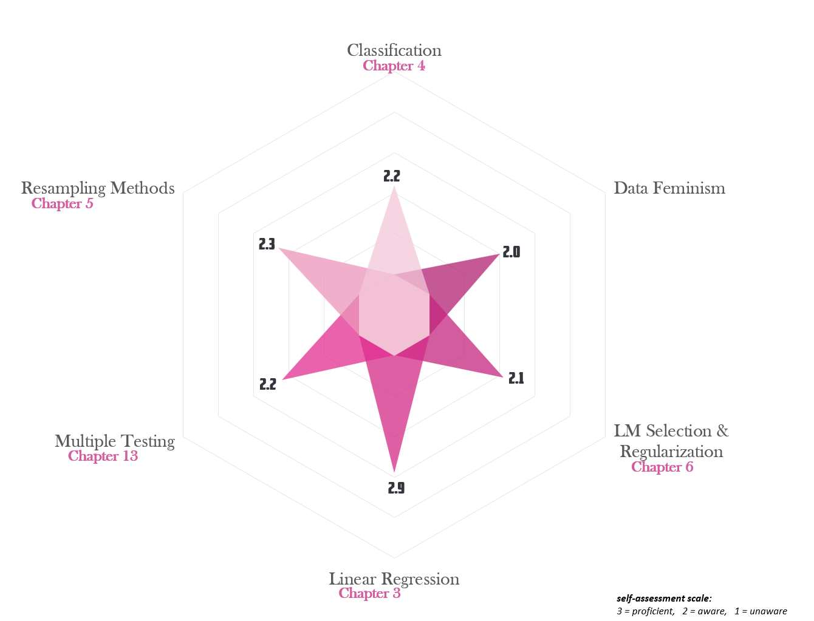

Current Level of Understanding
Statistical Modeling and Regression

Detailed Self-Assessment
| Course Concepts | |||
| Section | Section Title | Self Assessment1 | |
|---|---|---|---|
| ISL | 3.2 | Multiple Linear Regression | 3.0 |
| ISL | 3.3 | Other Considerations in the Regression Model | 3.0 |
| ISL | 3.4 | The Marketing Plan | 3.0 |
| ISL | 3.5 | Comparison of Linear Regression with K-Nearest Neighbors | 2.5 |
| ISL | 4.1 | An Overview of Classification | 3.0 |
| ISL | 4.2 | Why Not Linear Regression? | 3.0 |
| ISL | 4.3 | Logistic Regression | 2.0 |
| ISL | 4.4 | Generative Models for Classification | 1.5 |
| ISL | 4.5 | A Comparison of Classification Methods | 2.0 |
| ISL | 4.6 | Generalized Linear Models | 2.0 |
| ISL | 5.1 | Cross-Validation | 2.0 |
| ISL | 5.2 | The Bootstrap | 2.5 |
| ISL | 6.1 | Subset Selection | 2.0 |
| ISL | 6.2 | Shrinkage Methods | 2.0 |
| ISL | 6.3 | Dimension Reduction Methods | 2.5 |
| ISL | 6.4 | Considerations in High Dimensions | 2.0 |
| ISL | 13.1 | A Quick Review of Hypothesis Testing | 3.0 |
| ISL | 13.2 | The Challenge of Multiple Testing | 2.0 |
| ISL | 13.3 | The Family-Wise Error Rate | 2.0 |
| ISL | 13.4 | The False Discovery Rate | 2.0 |
| ISL | 13.5 | A Re-Sampling Approach to p-Values and False Discovery Rates | 2.0 |
| DF | n/a | The Power Chapter | 2.0 |
| DF | n/a | Collect, Analyze, Imagine, Teach | 2.0 |
| DF | n/a | On Rational, Scientific, Objective Viewpoints from Mythical, Imaginary, Impossible Standpoints | 2.0 |
| DF | n/a | What Gets Counted Counts | 2.0 |
| DF | n/a | Unicorns, Janitors, Ninjas, Wizards, and Rock Stars | 2.0 |
| DF | n/a | The Numbers Don<92>t Speak for Themselves | 2.0 |
| DF | n/a | Show Your Work | 2.0 |
| 1 Proficiency level ranges from 1 (low) to 3 (high). | |||